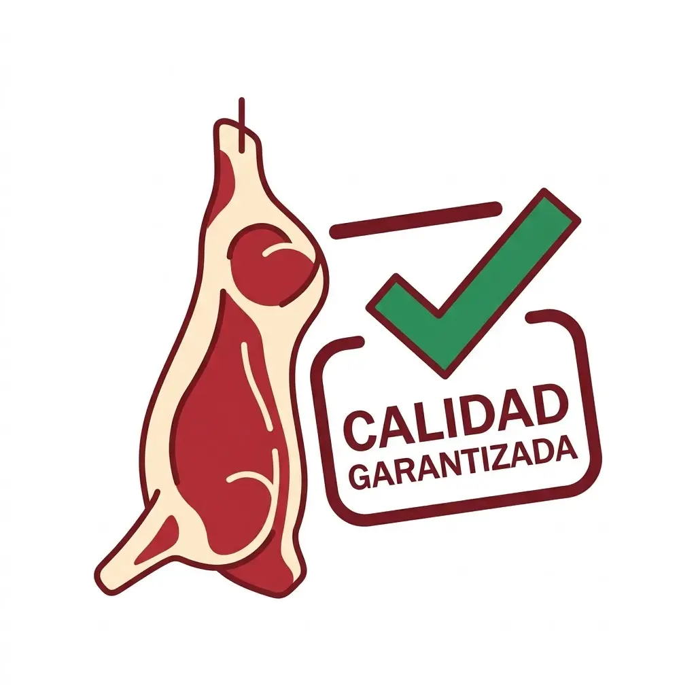
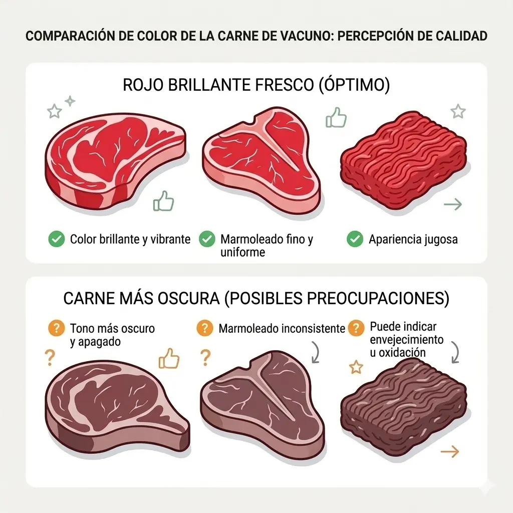
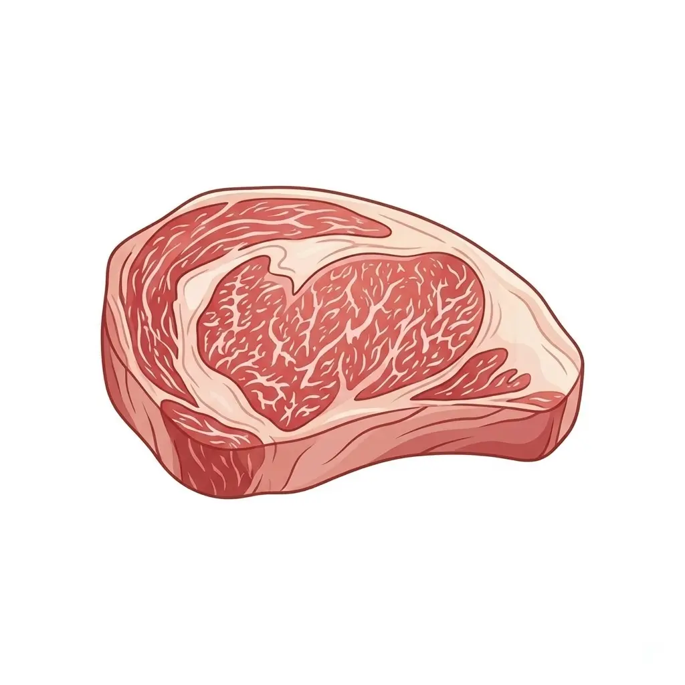
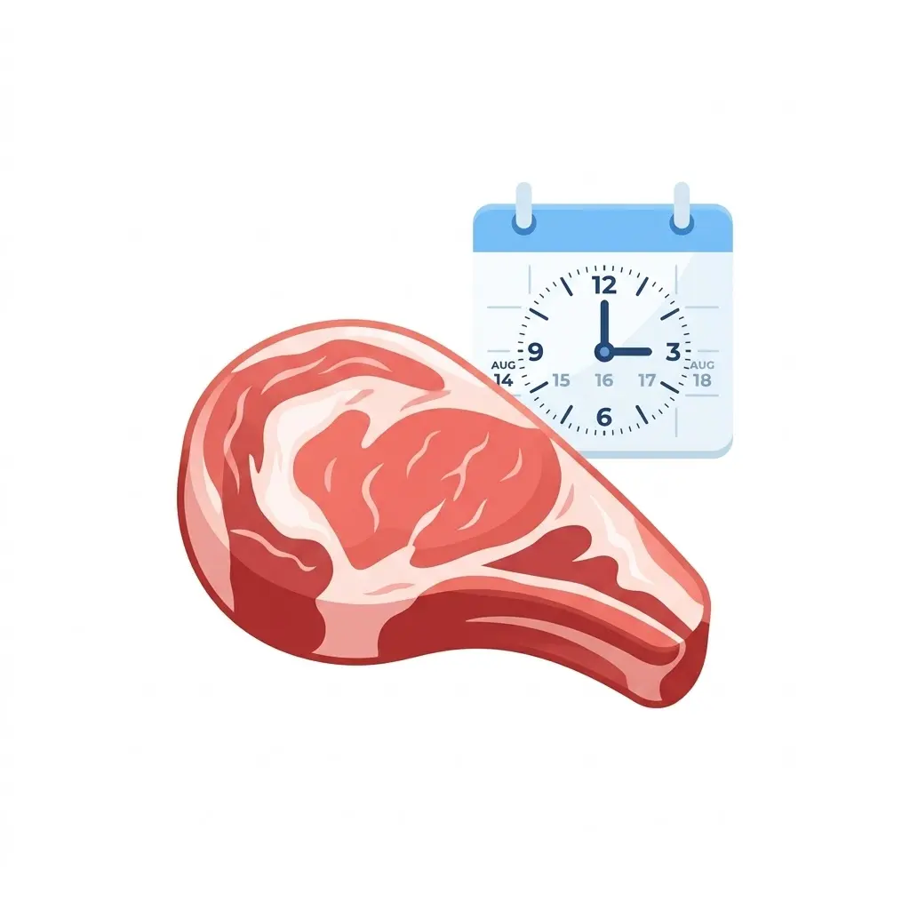
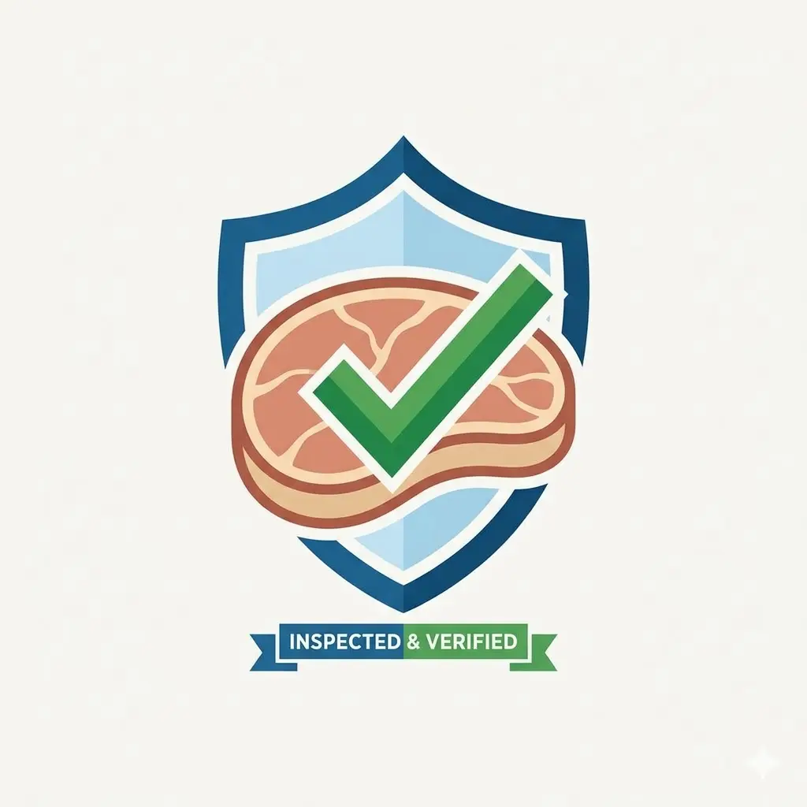

Años de trayectoria en operaciones del rubro
Comisionista de hacienda y comisionista cárnico
Los ojos de tu empresa en cualquier parte del mundo.
25 años de trayectoria · 5ª generación en el rubro cárnico · cobertura nacional e internacional
Servicio de comisionista de carnes, comisionista cárnico e inspección profesional de carne vacuna y porcina, con revisión y aparte de hacienda en depósitos y frigoríficos de Argentina y el Mercosur.
Cobertura con disponibilidad para relevar en origen
Criterio técnico para decidir con menos riesgo
Sobre el Servicio
Inspección y respaldo profesional en cada operación.
Soy comisionista de hacienda y comisionista cárnico. Mi trabajo consiste en ser los ojos de su empresa en plantas frigoríficas, depósitos y campos donde se encuentra la mercadería. Reviso cada aspecto clave del producto y le entrego un informe claro antes de que tome cualquier decisión de compra.
Trabajo con cadenas de supermercados, grandes carnicerías, restaurantes, catering y distribuidores minoristas. Cuento con movilidad propia, disponibilidad horaria a convenir y pasaporte al día para viajar a cualquier punto del país o al exterior.
Ver el servicio en detalle
Cómo funciona
Un proceso claro para decidir con información real.
Una vez en contacto con la empresa y entendida la necesidad, trabajo como comisionista de carnes y comisionista de hacienda en el lugar donde se encuentra la mercadería o la hacienda: frigorífico, cámara, depósito o campo.
Relevamiento inicial
Se toma contacto con la empresa, se define qué necesita revisar y se coordina la presencia en frigorífico, cámara, depósito o campo.
Control e inspección
Se verifica stock, fechas, trazabilidad, estado visual, temperatura, calidad del producto y condiciones de carga, traslado y entrega.
Seguimiento y cierre
Si la compra avanza, se coloca datalogger, se controlan remitos y factura, y en hacienda también se revisan marcas, vacunas, pesadas, guías y flete.
Trayectoria
Experiencia real construida año tras año en compra, faena y control.
Soy Marco Internícola y construí mi recorrido profesional trabajando con locales de venta minorista y mayorista, cadenas de carnicerías y operaciones de compra en frigoríficos y campo, desarrollando experiencia como comisionista de hacienda y comisionista cárnico.
Mi experiencia incluye compra en frigoríficos como Bustos y Beltrán, Estancias del Sur y Friar, faena de animales comprados de campo, compra de cerdo y faena en Frigorífico Novara. Hoy pongo en valor esos conocimientos para ayudar a empresas que necesitan respaldo técnico y comercial antes de decidir.
1
años
Compra y faena
Experiencia directa comprando en frigoríficos y faenando animales adquiridos de campo, con aprendizaje sostenido en cada año de trabajo.
Rubros atendidos
Trabajo con locales de venta minorista y mayorista, cadenas de carnicerías y empresas que necesitan revisión profesional antes de comprar.
Conocimiento aplicado
El objetivo actual es transformar esa trayectoria en un servicio concreto para empresas que requieren criterio, control y experiencia en origen.
Con quién trabajo
Sectores donde puedo aportar valor comercial real.
Acompaño operaciones de compra, revisión y control para distintos perfiles del rubro cárnico. Esta base puede ampliarse más adelante con casos, nombres autorizados o páginas específicas por tipo de cliente.
Supermercados
Acompaño empresas que necesitan revisar mercadería antes de comprar, validar calidad en origen y tomar decisiones con información más clara sobre stock, estado y documentación.
Carnicerías
Trabajo con cadenas de carnicerías, locales minoristas y mayoristas que buscan respaldo técnico y comercial antes de cerrar operaciones en frigorífico, depósito o campo.
Frigoríficos
Aporto trayectoria en compra y revisión de operaciones en frigoríficos, con experiencia en control visual, temperatura, trazabilidad y seguimiento de mercadería en origen.
Distribuidores
Trabajo con distribuidores y empresas que necesitan verificar carga, traslado, tiempos de entrega y documentación antes de avanzar con una compra o recepción.
Por qué importa
Comprar sin control previo puede convertirse en una pérdida costosa.
- Exceso de grasa que reduce rendimiento y margen comercial.
- Coloración o presentación que afecta la venta final.
- Diferencias entre lo ofrecido y lo realmente entregado.
- Fechas, conservación y trazabilidad mal verificadas.
- Falta de información concreta al momento de decidir.

Qué resuelve
Más control, menos incertidumbre, mejor criterio de compra.
La propuesta comercial de Santa Carne combina presencia en origen, revisión objetiva y acompañamiento profesional para que la empresa compre con más seguridad y menos margen de error.

Beneficios
Ventajas concretas para una operación más segura.
-

Ahorro real en cada compra
Una revisión previa en origen ayuda a evitar compras con desvíos de calidad, problemas de conservación o diferencias entre lo ofrecido y lo entregado.
-

Mejor control comercial
El servicio permite evaluar estado, presentación, stock y documentación antes de avanzar, con una mirada profesional puesta en la operación.
-

Decisiones con más respaldo
La empresa recibe información más clara para decidir con menor incertidumbre y más criterio técnico en cada instancia de compra o revisión.
-

Información antes de cerrar
Fechas, trazabilidad, temperatura, carga, traslado y tiempos de entrega pueden revisarse antes de confirmar la operación o recibir mercadería.
-

Más transparencia operativa
El acompañamiento en origen suma control, seguimiento y mayor tranquilidad para empresas que necesitan respaldo real antes de comprar.
Contacto
¿Necesitás tus ojos en el frigorífico?
Coordinamos la inspección a medida de tus necesidades. Disponibilidad para viajar a cualquier punto de la Argentina o al exterior. Respondemos en menos de 24 horas hábiles.
- +54 9 351 671-6666
- santacarne.contacto@gmail.com
- Córdoba, Argentina · cobertura nacional e internacional